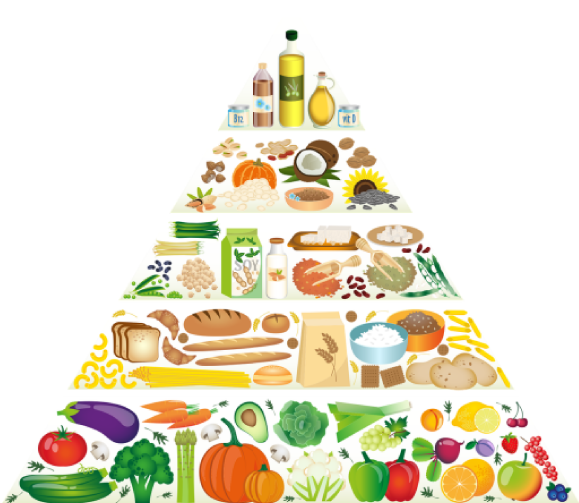

Crescendo
com saúde


Proporcionar uma vida saudável às crianças cabe a todos que participam da vida delas, e não somente à família.
Portanto, compreender a obesidade infantil como uma prioridade em saúde pública é o primeiro passo para avançar nas ações e nos programas que promovam melhores condições de vida, saúde e nutrição das crianças.
Os objetivos desta capacitação são prevenir a obesidade infantil por meio da educação nutricional de alunos, família e educadores das escolas de educação infantil; sensibilizar pais e educadores a respeito dos riscos para a saúde relacionados à obesidade infantil; inovar na organização de ações de promoção de saúde e alimentação saudável nas escolas; orientar a família, os educadores e as crianças a fim de promover a alimentação adequada e saudável; e estimular a mudança de hábitos relacionados à alimentação, ao tempo em frente às telas, às brincadeiras ativas e à higiene do sono.
O conteúdo desta capacitação está separado em três perfis. Se você é educador, acesse o conteúdo no botão “Educadores”. Se você é responsável por alunos das escolas infantis, acesse o botão “Família”. As crianças poderão, com a ajuda de um adulto, acessar o terceiro perfil, “Crianças”, que tem conteúdos voltados exclusivamente para elas, a fim de que se divirtam e aprendam mais sobre o tema.
Antes de iniciar essa jornada, conheça mais sobre o conceito atual de alimentação e seus novos direcionamentos.
A abordagem da pirâmide alimentar, utilizada ao longo dos anos como norteadora para a estruturação da alimentação saudável, atualmente é considerada uma abordagem reducionista, pois, nesta perspectiva, os alimentos são meros carregadores de nutrientes e a alimentação não passa da soma dos nutrientes consumidos ao longo do dia.
A partir da revisão do Guia Alimentar para a População Brasileira, publicada em 2014 pelo Ministério da Saúde, o conceito de alimentação foi ampliado, salientando não somente aspectos biológicos, mas também os impactos socioculturais e ambientais relacionados aos padrões alimentares.
Além disso, o Guia inovou, apresentando aspectos qualitativos para as recomendações nutricionais em vez de aspectos quantitativos, como as quantidades de nutrientes e calorias, criando assim os princípios do guia alimentar.
Clique ou toque para visualizar os cinco princípios do Guia Alimentar para a População Brasileira (2014):
Alimentação refere-se à ingestão de nutrientes e também de alimentos que contêm e fornecem os nutrientes; refere-se a como os alimentos são combinados entre si e preparados; a características do modo de comer e às dimensões culturais e sociais das práticas alimentares. Todos esses aspectos influenciam a saúde e o bem-estar.
As recomendações feitas por guias alimentares devem considerar o cenário da evolução da alimentação e das condições de saúde da população.
As recomendações sobre alimentação devem considerar o impacto dos meios de produção e distribuição dos alimentos sobre a justiça social e a integridade do ambiente.
Diante das várias dimensões da alimentação e da complexa relação entre essas dimensões e a saúde e o bem-estar das pessoas, o conhecimento necessário para elaborar recomendações sobre alimentação é gerado por diferentes saberes.
O acesso a informações confiáveis sobre características e determinantes da alimentação adequada e saudável contribui para que pessoas, famílias e comunidades ampliem a autonomia para fazer escolhas alimentares e para que exijam o cumprimento do direito humano à alimentação adequada e saudável.
Agora que você já conheceu esses novos conceitos sobre alimentação, clique em seu perfil e aproveite este conteúdo preparado para você.
Uma das epidemias do século XXI, a obesidade infantil é atribuída a fatores políticos, econômicos, sociais e culturais. No vídeo a seguir, conheça mais sobre esse problema, que atinge uma expressiva parcela mundial e é um dos desafios da saúde pública.
Clique ou toque para assistir ao vídeo.
No vídeo a seguir, veja quais são os hábitos essenciais para uma vida saudável e como transformar sua alimentação e prevenir a obesidade infantil.
Clique ou toque para assistir ao vídeo.
Confira, no vídeo a seguir, quais são os elementos essenciais na comunicação entre produto e consumidor. Faça boas escolhas e tenha uma alimentação saudável.
Clique ou toque para assistir ao vídeo.
Na tabela nutricional a seguir, você encontrará informações referentes à composição nutricional dos produtos. Toque ou passe o mouse em cada elemento para saber mais sobre ele:
É a energia produzida pelo nosso corpo, proveniente dos carboidratos, das proteínas e das gorduras totais. Na rotulagem nutricional, o valor energético é expresso em forma de quilocalorias (kcal) e quilojoules (kJ).
Obs.: quilojoule (kJ) é outra forma de medir o valor energético dos alimentos, sendo que 1 kcal equivale a 4,2 kJ.
São os componentes dos alimentos cuja principal função é fornecer a energia para as células do corpo. Os carboidratos são encontrados em maior quantidade em massas, arroz, açúcar, mel, pães, farinhas, tubérculos (como batata, mandioca e inhame) e doces em geral.
Na legislação em vigência, ainda não é obrigatória a informação sobre o açúcar na rotulagem, sendo ele incluído como carboidrato. É preciso buscar essa informação na lista de ingredientes, na qual o açúcar pode ser mencionado com outros nomes, como glucose de milho, glicose, xarope de malte, frutose, sacarose, maltodextrina, dextrose, néctares, xarope de milho.
São componentes dos alimentos, necessários para construção e manutenção de órgãos, tecidos e células do corpo. As proteínas são encontradas em carnes, ovos, leites e derivados e também nas leguminosas (como feijões, soja e ervilha).
São as principais fontes de energia do corpo e ajudam na absorção das vitaminas A, D, E K. As gorduras totais referem-se à soma de todos os tipos de gorduras encontradas em um alimento que seja tanto de origem animal quanto de origem vegetal.
É um tipo de gordura presente em alimentos de origem animal (carnes, toucinho, pele de frango, queijos, leite integral, manteiga, requeijão, iogurte). O consumo desse tipo de gordura deve ser moderado, pois, se consumido em grandes quantidades, pode aumentar o risco de desenvolvimento de doenças do coração.
Gordura trans ou ácido graxo trans são um tipo de gordura que pode estar naturalmente presente em alimentos de origem animal ou ser produzida industrialmente por meio de processos tecnológicos, a fim de conferir maior crocância e sabor e aumentar o tempo das condições de consumo de determinados produtos. Esse tipo de gordura é normalmente encontrado em alimentos ultraprocessados e, quando consumido em grande quantidade, pode aumentar o risco de desenvolvimento de doenças do coração. A informação sobre a quantidade de gordura trans nos alimentos é obrigatória no Brasil. Entretanto, se a quantidade presente no alimento for igual ou inferior a 0,2 gramas por porção do alimento, ela pode ser declarada como zero na tabela nutricional. Atualmente, a Organização Mundial de Saúde (OMS) recomenda que o consumo diário de gordura trans não ultrapasse 1% do valor energético total de uma dieta, o que representaria um valor que não excedesse 2 gramas por dia em uma dieta de 2.000 calorias.
São partes dos alimentos que resistem à digestão e reduzem o tempo que o alimento leva para ser digerido e eliminado. As fibras alimentares são benéficas para a função intestinal, previnem a constipação, favorecem a absorção de alguns nutrientes e são fatores de proteção contra algumas doenças.
É o principal constituinte do sal de cozinha e está muito presente em alimentos industrializados. Ele deve ser consumido com moderação, já que o seu consumo em excesso pode resultar em aumento da pressão arterial. Segundo o Ministério da Saúde, se a quantidade de sódio for maior do que 400 mg em 100 g do alimento, este será considerado um alimento rico em sódio, sendo prejudicial à saúde e, portanto, devendo ser evitado.
É a quantidade média do alimento que deve ser usualmente consumida por pessoas sadias, promovendo a alimentação saudável.
É um número em percentual que indica quanto o produto em questão apresenta de energia e nutrientes em relação a uma dieta 2.000 calorias.
Indica a medida normalmente utilizada pelo consumidor para medir alimentos, por exemplo: fatias, unidades, pote, xícaras, copos, colheres de sopa. A apresentação da medida caseira é obrigatória, ajudando a entender melhor as informações nutricionais.
Os valores descritos em cada item da tabela nutricional (carboidrato, proteína, gorduras etc.) são referentes à porção descrita na tabela e não se referem à composição total do alimento.
Acompanhe, neste vídeo, algumas dicas de como tornar no dia a dia o seu alimento mais durável, fresco e seguro.
Clique ou toque para assistir ao vídeo.
Alimentação é interação social. Conheça no vídeo a seguir as dimensões do ato de comer e como elas são essenciais para o nosso desenvolvimento.
Clique ou toque para assistir ao vídeo.
Preparamos dois e-books para auxiliá-lo em suas aulas. Se preferir, você também poderá fazer o download de cada um deles.
https://bvsms.saude.gov.br/bvs/publicacoes/guia_alimentar
_populacao_brasileira_2ed.pdf
Obesidade infantil: um dos desafios da saúde pública do século XXI. Confira o cenário atual desta epidemia.
Clique ou toque para assistir ao vídeo.
Pequenas mudanças para grandes transformações no cenário da obesidade infantil.
Clique ou toque para assistir ao vídeo.
Fatores externos e suas influências no cotidiano sedentário
Clique ou toque para assistir ao vídeo.
A falta de acesso a alimentos saudáveis e a facilidade das comidas industrializadas: uma combinação perigosa
Clique ou toque para assistir ao vídeo.
A rotina dos pais e sua influência no crescimento saudável
Clique ou toque para assistir ao vídeo.
A intervenção da publicidade na escolha dos alimentos
Clique ou toque para assistir ao vídeo.
A obesidade infantil e o impacto no corpo
A obesidade infantil e o impacto na mente
As mudanças no prato e as transformações saudáveis
As categorias dos alimentos e a qualidade de suas refeições
Passo a passo de como montar um prato colorido, diverso e saudável
Dicas de como preservar seus alimentos e mantê-los frescos por mais tempo
Dicas de como manipular corretamente os alimentos e mantê-los seguros
Dicas de como entender os rótulos e conhecer os alimentos que você compra
A importância de comer com regularidade e atenção
A importância do ambiente na hora de comer
A importância da companhia na hora de comer
A rotina como fator essencial para a alimentação saudável
Pratos coloridos e saúde de qualidade
A rotina como fator essencial para a alimentação saudável
A importância do exercício físico no combate à obesidade
Clique ou toque nos títulos para assistir aos vídeos.
Obesidade infantil: um dos desafios da saúde pública do século XXI. Confira o cenário atual desta epidemia.
Clique ou toque para assistir ao vídeo.
Pequenas mudanças para grandes transformações no cenário da obesidade infantil.
Clique ou toque para assistir ao vídeo.
Fatores externos e suas influências no cotidiano sedentário
Clique ou toque para assistir ao vídeo.
A falta de acesso a alimentos saudáveis e a facilidade das comidas industrializadas: uma combinação perigosa
Clique ou toque para assistir ao vídeo.
A rotina dos pais e sua influência no crescimento saudável
Clique ou toque para assistir ao vídeo.
A intervenção da publicidade na escolha dos alimentos
Clique ou toque para assistir ao vídeo.
A obesidade infantil e o impacto no corpo
A obesidade infantil e o impacto na mente
As mudanças no prato e as transformações saudáveis
As categorias dos alimentos e a qualidade de suas refeições
Passo a passo de como montar um prato colorido, diverso e saudável
Dicas de como preservar seus alimentos e mantê-los frescos por mais tempo
Dicas de como manipular corretamente os alimentos e mantê-los seguros
Dicas de como entender os rótulos e conhecer os alimentos que você compra
A importância de comer com regularidade e atenção
A importância do ambiente na hora de comer
A importância da companhia na hora de comer
A rotina como fator essencial para a alimentação saudável
Pratos coloridos e saúde de qualidade
A rotina como fator essencial para a alimentação saudável
A importância do exercício físico no combate à obesidade

Confira a seguir alguns materiais complementares para que você aprofunde seus conhecimentos, compartilhando-os também com as crianças.
https://bvsms.saude.gov.br/bvs/publicacoes/guia_alimentar_
populacao_brasileira_2ed.pdf